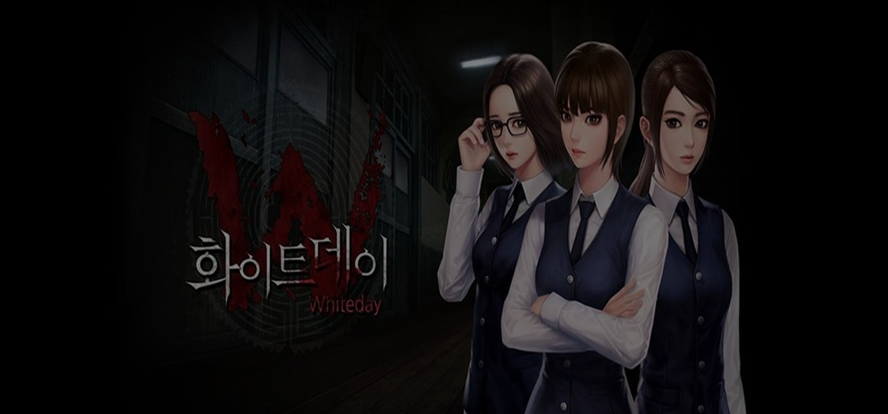

화이트데이 : 학교라는 이름의 미궁
<화이트데이>에서는 연두고의 비밀과 발동하게 된 미궁, 그곳으로부터의 희민의 탈출이 우선하는 스토리로 존재하고, 여기서 괴담은 1인칭 생존게임의 퀘스트로써 작용한다. 괴이증후군에 비해 수단으로써 쓰이는 단편적 괴담이 다수이며, 몇몇 괴담만 메인 스토리와 연결된다. <화이트데이>는 괴담 요소를 1인칭 생존게임 속 공포의 대상으로 잘 활용한 케이스이다. 학창시절 한 번쯤 들어보고 보았을 법한 괴담과 사물들이 공포 분위기를 더욱 심화시킨다. 움직이는 석고상과 인체모형, 익숙한 한국 고등학교 내부 풍경, 학교에 하나쯤 있을법한 작은 연못 거목 등이 그 예. 충실한 호러 요소와 1인칭 생존게임이란 형식 덕분에 호러게임 마니아층과 생존게임 마니아층 타겟팅에 성공했다. 유니티를 활용한 3D 연출, 실감 나는 효과음, 가야금을 활용한 으스스한 메인 bgm, 성우들의 더빙이 다양한 즐길 거리를 제공하며 일반 게임 유저층에게 또한 잘 알려진 게임.